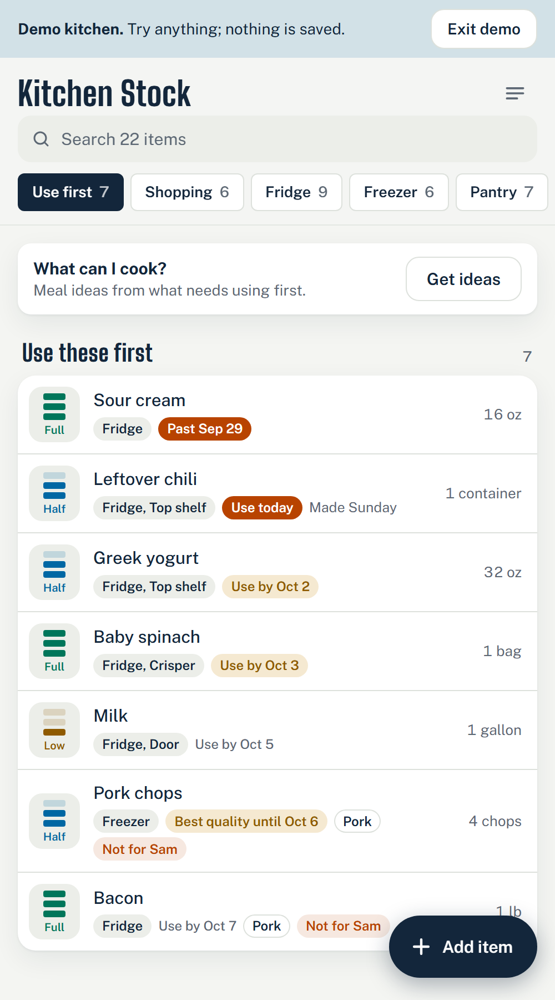
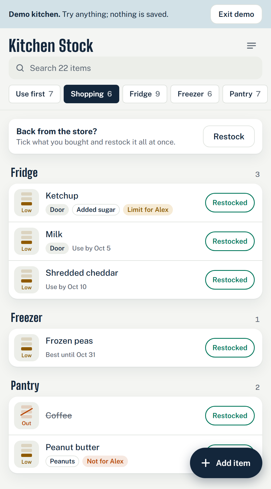

Kitchen Stock
Kitchen StockHand off a kitchen that stays organized
You make the kitchen work. Kitchen Stock helps it stay that way: a live list of what's in the fridge, freezer and pantry that your client keeps using on their phone after you leave, so the system you built doesn't drift back.
No app store and no sign-up to try it. The sample kitchen saves nothing.

How it works, visit by visit
Everything happens on your phone and theirs. The app opens from a link and can be added to the home screen on iPhone and Android.
-
Before the first visit
- Open the app and sign in with your email. There's no password; the app emails you a way in.
- In Settings, under Sharing, tap Set up another kitchen and name it for the client ("The Garcias' kitchen"). It opens right away with a fridge, a freezer and a pantry to start from.
- Every client gets their own kitchen, with its own list and its own people. Switch between them under Your other kitchens.
-
During the visit
- Places. In Settings, under Places, make the list match the real kitchen: the garage fridge, the chest freezer, the tall cabinet. Put each place's shelf spots in the order you walk them: top shelf, door, crisper.
- People and food rules. Add each person and what they avoid or limit: pork, gluten, peanuts, added sugar, anything. Matching items get flagged, so "Not for Sam" shows up on the pork chops.
- Items. Add things as you put them away, or scan the barcode to fill in the name and size. Freezer items get a best-quality date from how they're wrapped.
- Count it. On each place, tap Count. It walks you through spot by spot with four big buttons: Full, Half, Low, Out.
-
Hand it over
- In Settings, under Sharing, tap Invite an owner. You get a code that works once, for 7 days.
- Your client opens the app on their phone, signs in with their email and types the code under Or join with a code. The kitchen is now theirs, and they can invite the rest of the household.
- Stay on for check-ins and recounts, or leave. A kitchen always keeps at least one owner, so it's never left without one.
-
Between visits
Your client keeps it going in a few taps a day.
- Tapping an item down to low or out puts it on the Shopping list.
- Back from the store, they tick what they bought and it's all restocked at once, or they take a photo of the receipt.
- Use first shows what's getting old, oldest first.
- If they turn on reminders, Saturday morning brings the shopping list and a nudge about any place that hasn't been counted in two weeks.
- If you stayed on, you see the same live list from your phone.
-
Come back for a recount
- Each place shows when it was last counted ("Last counted 3 weeks ago"), so you know where to start.
- Count it again. At the end, tap Print summary for a one-page "what changed" sheet.
- Hand it over on paper, or choose Save as PDF in the print window and send it.
A summary of every recount
After each count, the app makes a one-page sheet for that place: what ran out, what's running low, what got used and what was restocked, with how many things are on the shopping list. It prints in blue ink, or saves as a PDF.
It shows the client what the visit did, and it gives you both something to look at when you talk about the next one.
24 items counted, 5 changed. 4 things are on the shopping list.
Ran out
- Coffee low to out
Running low
- Olive oil half to low
- Peanut butter half to low
Used some
- Rice 5 lb full to half
Restocked
- Canned tomatoes low to full
What your client gets
Use first
What to eat this week, oldest first, so food gets used instead of found.
A shopping list that writes itself
Anything marked low or out lands on the list, sorted by place. One tap restocks it after the store.
A freezer clock
Best-quality dates by how food is wrapped: 90 days in a freezer bag, a year vacuum-bagged, two years chamber-sealed.
Food rules per person
Allergies, pork, gluten, sugar, anything. Items get flagged so nobody has to remember.
One list, every phone
Shared live with the household, and it still works with no signal.

Why it fits your business
Something to leave behind
The client keeps a working list of the kitchen you set up, on their own phone, so it stays organized after you go.
A reason to check back
You can stay on the kitchen and see how it's going. A place that hasn't been counted in weeks is a natural reason to get in touch.
Repeat visits
A recount with a printed summary of what changed is a simple, concrete thing to offer every season.
Your client owns it
Each household only ever sees its own kitchen. Nobody outside it, including your other clients, can see or change anything. Those rules are checked by automated tests.
Pricing
Pricing for organizers is still being set. If you'd like to use Kitchen Stock with your clients, or try it on a real job first, get in touch.
[CONTACT EMAIL]